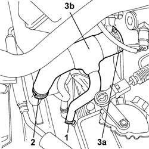
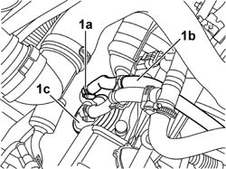
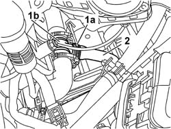

2130A70 Rubber hose with built in flexible pipe for directing coolant to automatic transmission oil heat exchanger
- Path
- Procedures > 21 GEARBOX > 2130 AUTOMATIC TRANSMISSION AND DIFFERENTIAL > 2130A AUTOMATIC TRANSMISSION ASSEMBLY > 2130A70 Rubber hose with built in flexible pipe for directing coolant to automatic transmission oil heat exchanger
- Kind
- repair procedure (removal / refitting; the operation number is the code)
- Applies to
- engines: 2.0 TB, 2.4 20V, 3.0 V6, 3.2 V6; all production periods
- Interactive page
- https://sloeber94.github.io/elrnDB-lThss/en/#/190168
Applies to: engines: 3.0 V6, 3.2 V6; all production periods
 Removing
Removing
 Refitting
Refitting- Open the boot, remove the cover on the left hand side and disconnect the negative battery lead.
See in Op. 7040D50 ENGINE COMPARTMENT UPPER SOUND INSULATION SHIELD - R.R.
See in Op. 1048A21 AIR INLET HOSE FROM INTAKE TO FILTER - R.R.
See in Op. 1048A28 vacuum air circuit resonator pipe - r+r
See in Op. 1016A42 LEFT CYLINDER HEAD IGNITION COIL COVER - R.R.
See in Op. 1048A11 COMPLETE AIR FILTER -R.R.
- Position a suitable container for collecting the engine coolant.
1. Open the retaining band between the hose and the automatic transmission fluid heat exchanger and disconnect the pipe collecting the engine coolant.
2. Open the band retaining the rubber hose to the rigid pipe coming from the radiator and disconnect it.
3. Open the band (3a) retaining the hose (3b) to the thermostat unti and remove it.

Applies to: engines: 3.0 V6, 3.2 V6; all production periods
Refitting
Removing- Position the hose securing it to the thermostat unit and close the retaining band.
- Connect the hose to the rigid pipe and close the retaining band.
- Connect the hose to the heat exchanger and close the retaining band.
See in Op. 1048A11 COMPLETE AIR FILTER -R.R.
See in Op. 1016A42 LEFT CYLINDER HEAD IGNITION COIL COVER - R.R.
See in Op. 1048A28 vacuum air circuit resonator pipe - r+r
See in Op. 1048A21 AIR INLET HOSE FROM INTAKE TO FILTER - R.R.
- Connect the negative battery terminal and position the cover on the left hand side of the luggage compartment.
See in Op. 0010T21 ENGINE COOLANT - Check density and top up if necessary
-
See in Op. 7040D50 ENGINE COMPARTMENT UPPER SOUND INSULATION SHIELD - R.R.
Applies to: engines: 2.4 20V; all production periods
Removing
Refitting- Position the vehicle on a lift.
- Open the boot, remove the cover on the left hand side and disconnect the negative battery lead.
See in Op. 7040D50 ENGINE COMPARTMENT UPPER SOUND INSULATION SHIELD - R.R.
See in Op. 1016A40 Ignition COIL COVER on cylinder head - R.R.
See in Op. 1048A21 AIR INLET HOSE FROM INTAKE TO FILTER - R.R.
See in Op. 1048A23 Cold AIR INTAKE for air filter - R.R.
See in Op. 1048A28 vacuum air circuit resonator pipe - r+r
See in Op. 1048A48 HOSE BETWEEN RESONATOR AND THROTTLE CASING - R.R.
See in Op. 1056B82 Injection/ignition system CONTROL UNIT (one) - R.R.
See in Op. 1056B14 THROTTLE CASING - R.R.
See in Op. 1056B87 INJECTION/IGNITION CONTROL UNIT MOUNTING - R.R.
See in Op. 1048A10 COMPLETE AIR FILTER -R.R.
- Raise the vehicle on the lift.
See in Op. 7055B54 PROTECTION/GUARD under engine - R.R.
- Position a suitable container for collecting the engine coolant.
1. Open the band (1a) for the automatic transmission fluid heat exchanger flexible water supply pipe (1c) and drain the coolant.

Applies to: engines: 2.4 20V; all production periods
1. Open the band (1a) at the connector for the coolant supply pipe (1b) from the pump.
2. Remove the automatic transmission fluid heat exchanger water supply pipe after having released it from the retaining bands on the cylinder block/crankcase.

Applies to: engines: 2.4 20V; all production periods
Refitting
Removing- Connect the automatic transmission fluid heat exchanger water supply pipe to the connector for the pump coolant supply pipe.
- Secure the pipe to the retaining bands on the cylinder block/crankcase.
- Connect the automatic transmission fluid heat exchanger water supply pipe using the band.
See in Op. 1048A10 COMPLETE AIR FILTER -R.R.
See in Op. 1056B87 INJECTION/IGNITION CONTROL UNIT MOUNTING - R.R.
See in Op. 1056B14 THROTTLE CASING - R.R.
See in Op. 1056B82 Injection/ignition system CONTROL UNIT (one) - R.R.
See in Op. 1048A48 HOSE BETWEEN RESONATOR AND THROTTLE CASING - R.R.
See in Op. 1048A28 vacuum air circuit resonator pipe - r+r
See in Op. 1048A23 Cold AIR INTAKE for air filter - R.R.
See in Op. 1048A21 AIR INLET HOSE FROM INTAKE TO FILTER - R.R.
See in Op. 1016A40 Ignition COIL COVER on cylinder head - R.R.
See in Op. 7040D50 ENGINE COMPARTMENT UPPER SOUND INSULATION SHIELD - R.R.
- Connect the negative battery terminal.
See in Op. 0010T21 ENGINE COOLANT - Check density and top up if necessary
See in Op. 7055B54 PROTECTION/GUARD under engine - R.R.
- Remove the vehicle from the lift.
Applies to: engines: 2.0 TB; all production periods
- Operation not available
Topics linked from this page (14)
- 0010T21 ENGINE COOLANT - Check density and top up if necessary
- 1016A40 Ignition COIL COVER on cylinder head - R.R.
- 1016A42 LEFT CYLINDER HEAD IGNITION COIL COVER - R.R.
- 1048A10 COMPLETE AIR FILTER -R.R.
- 1048A11 COMPLETE AIR FILTER -R.R.
- 1048A21 AIR INLET HOSE FROM INTAKE TO FILTER - R.R.
- 1048A23 Cold AIR INTAKE for air filter - R.R.
- 1048A28 vacuum air circuit resonator pipe - r+r
- 1048A48 HOSE BETWEEN RESONATOR AND THROTTLE CASING - R.R.
- 1056B14 THROTTLE CASING - R.R.
- 1056B82 Injection/ignition system CONTROL UNIT (one) - R.R.
- 1056B87 INJECTION/IGNITION CONTROL UNIT MOUNTING - R.R.
- 7040D50 ENGINE COMPARTMENT UPPER SOUND INSULATION SHIELD - R.R.
- 7055B54 PROTECTION/GUARD under engine - R.R.